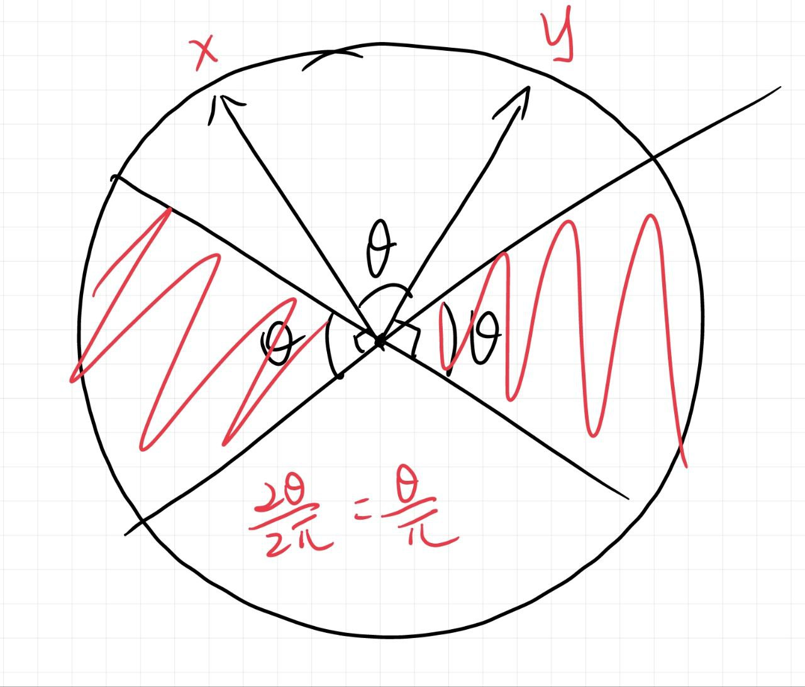

「随机算法专题」距离与相似度的度量
Hamming 空间最近邻（近似）：设有个维的 Hamming 空间上的点，要求给定，在
时间内找到-近邻。预处理时间限制为。
要解决这个问题，我们首先需要需要引入一些估计方法。
Min Hash
集合相似度度量：如何判断两个集合的相似度？
朴素想法：我们可以一一比对其中的元素。
考虑定义集合的相似度：。特别地，。
假设存在一个随机哈希，能够将中的元素均匀随机映射到某个域上。那么和中的元素可以近似看作在中均匀随机生成的数。
设。由于随机哈希，的概率是。也就是说重复若干次随机哈希的过程，我们可以让每个数的哈希值成为最小值的次数差不多一致。这启发我们在判断集合中是否存在某个相同元素时，可以通过随机哈希转化为比较最小值的问题。
引理：。如果两者相等，说明此次哈希随机到的数在两边都出现了。否则必然只在一边出现。
Chernoff bound: 设是上的独立随机变量，为其均值，。则对有
使用上述不等式可以分析需要的哈希个数，但要注意这和答案本身是有直接的关系的。
Sim Hash
向量的相似性度量：判断高维空间两个向量的相似度？
相似度的定义：，即。范数：。
类似 Min Hash，我们希望通过概率反映。这样就可以通过多次重复随机来近似计算相似度。
考虑生成维空间的一个随机高斯向量（先每一维分别独立服从正太分布，然后单位化）。定义
那么我们声称：。下图是二维的情况：

取个独立随机哈希，重复计算即可逼近相似度。
这时如果令，就会发现。
因此可以将视作到维 Hamming 空间（超立方体空间）的映射。
于是我们就得到了维 Hamming 空间中距离的一个估计函数：。
Hamming 空间近似最近邻
注意到 Sim Hash 中给出的估计函数是关于和的距离。如果要直接估计的距离的话，就需要找到某个映射，使得。
不难想到取为随机阶排列。生成随机排列：和前面随机一个数交换。
当然这道题要求找到-近邻，因此对于询问的我们要找到距离最小的点。
其实结合刚刚的 Min Hash，如果将 Hamming 空间中的点视作的子集，那么就相当于是一个随机哈希。而如果取了足够多的，那么与的近似最近邻的相同部分总会在某个哈希中被 roll 到前几个位置上去。基于这样的思想，我们可以用 LCP 来去掉不优的点。
假设取了个。
考虑所有。我们找到其中长度最大的个对应的，然后计算这些点与的最近邻。
参数分析略（太复杂了没学会）。
修订记录
- 2023年3月22日 创建文章